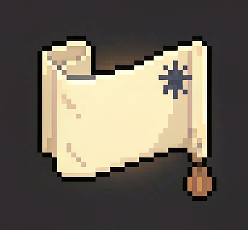
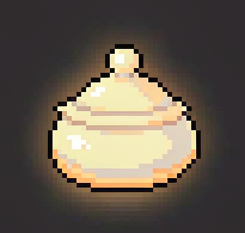
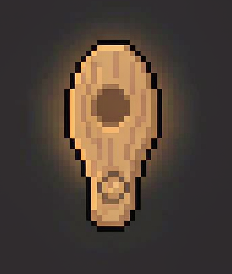
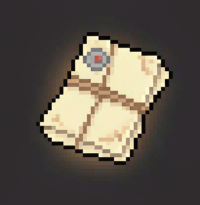
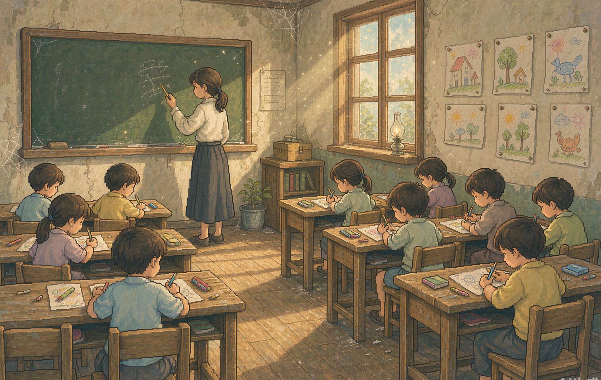
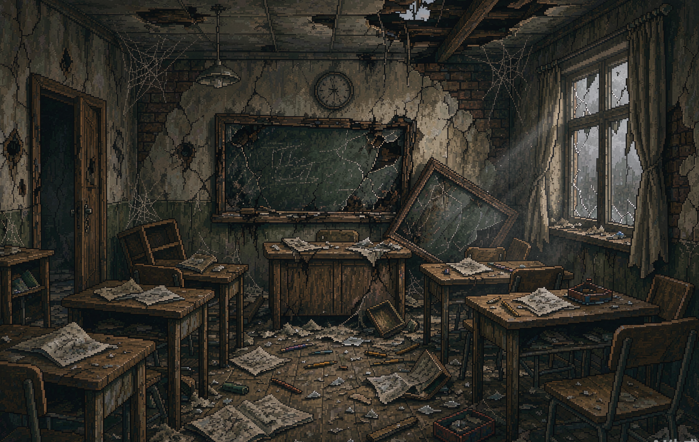
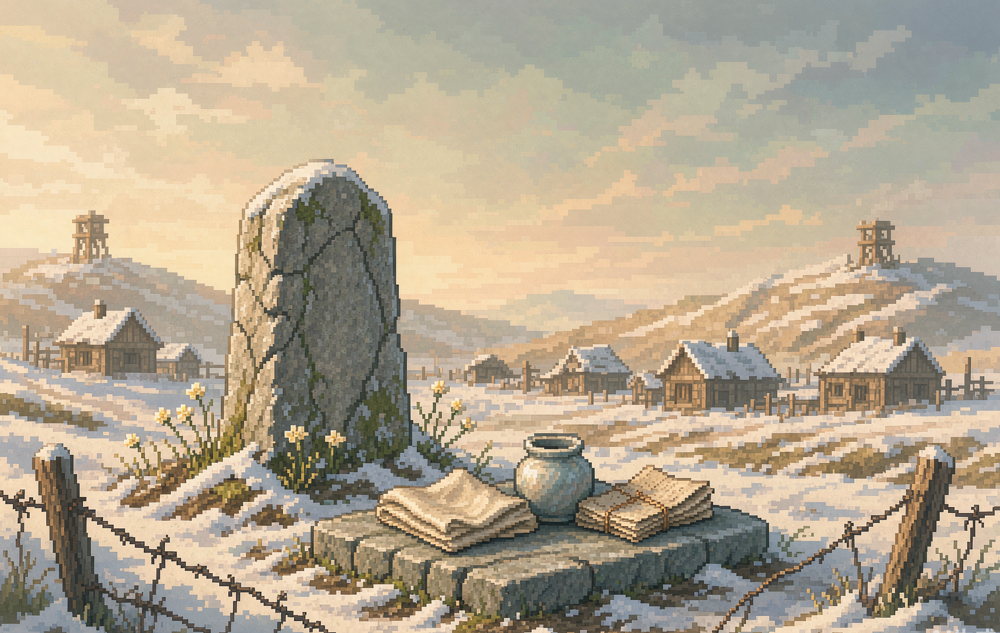
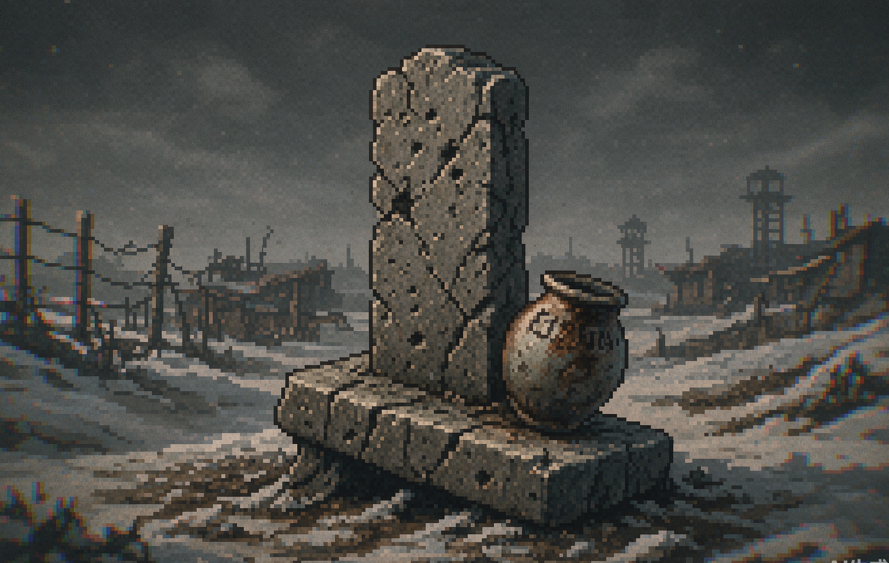

BORDER WHISTLE · 32BIT 像素 · 开发中 34%
《边界哨声》BORDER WHISTLE
边界分割同一片土地，遗物留住曾经的时光，哨声呼唤遥远的理解。
世界切换 · 全页生效
边界分割同一片土地，遗物留住曾经的时光，哨声呼唤遥远的理解。
我们不断循环，想要跨越边界拯救所有人；直到读懂一件件遗物才明白：和平不是抹去伤痛，而是记住那些平凡的幸福，并愿意隔着隔阂听见彼此——但这份理解，永远无法强求所有人。
《边界哨声》反对的是战争本身，不是任何一群人。没有 BOSS，没有可以消灭的敌人——战争是一股持续侵蚀家园的力量。这份心情，也写在《世界和平》页。
刀感来自留白、遗憾与信任破碎。没有尸体、血腥特写、残肢与猎奇画面。
不塑造单一反派阵营。士兵只是远处的模糊剪影——批判的是战争，不是某一群人。
流弹只破坏环境、打断叙事、冲击情绪。玩家不会受伤、不会死亡、没有血条。
没有完美结局，没有一键终止战争的魔法。和平是艰难、局部、需要彼此尝试理解的选择。
你扮演一名无名少年。小镇被无形边界分割为「安宁侧」与「战火侧」，你可以在边界石碑切换两个世界。当炮火吞没小镇核心，时间回到开战前一小时——循环开始。单轮之内完全自由，没有强制顺序。
在边界石碑切换双世界，用两侧状态差异完成对照解谜，打通转移通路、运送物资。
搜寻 12 件遗物，解锁战前日常闪回，试着读懂居民藏在物件里的执念。
带着读懂的牵挂去劝说居民前往避难所——不是所有人都会跟你走，有些人无论如何都不离开。
找齐 5 块哨片，拼合木哨。它是跳出循环、解锁真结局的唯一钥匙。
随时回到石碑，把遗物陈列在石台之上。它们永久保存，不受循环重置影响，成为记忆纪念碑。
安宁侧与战火侧共用同一套瓦片集——战火侧不是另一张地图，而是安宁侧被侵蚀变形后的样子。解谜全部来自「同一场景、两种状态」的对照。

10 件普通遗物随机刷新完好或损毁状态；另有 2 件固定永久损毁遗物——烧焦的全家福、破了洞的婴儿袜——永远刷不出完好版本，没有完整温暖闪回。




↑ 材质示例：点击任意一件，切换完好（径向暖柔光）与损毁（暗沉灰调漫光、边缘烟尘与色散）两种状态。
哨片与遗物相互独立，是主线道具：集齐 5 块自动拼合木哨。哨子只能在边界线上吹响——站在两个世界之间，吹响整首曲子的原点。
循环的本质：是主角内心不愿接受离别与失去，不断回溯时间。但人心的伤痕，不会被时间重置抹去。
隐藏支线：连续多轮优先保全同一批人、反复放弃另一群人，石碑会浮现这行淡刻字。无惩罚，仅情绪提醒。
战争随机性的具象化：没有明确子弹来源，无法预判、无法防御、无法反击。单轮循环触发 2–4 次，冷却随机；第一轮仅有 1 次轻微扰动。它专挑平静被建立起来的时刻到来。
远处模糊闷响，地面微震，橘猫受惊跑开。不破坏任何物件。
窗户碎裂、瓦片坠落、花盆击碎、晾衣布条撕裂、木桶炸开；打断对话与回忆；居民受惊，信任临时下降。
石碑震落石屑，陈列台上的遗物倾倒，正在播放的闪回被噪点直接掐断；居民轮廓蒙上灰噪。
重要机制：被流弹打断的居民对话与专属回忆，本轮循环不再触发——永久错过。
轮廓蒙上细灰颗粒，轻微色彩偏移，抖动幅度柔和。
画面色温下沉、颗粒密度上升、局部色彩色散。


安宁侧：孩子上课画画，老师吹哨集合放学。战火侧：课桌翻倒，黑板只剩半截粉笔字，画纸散落一地。（用右下角的开关，看这间教室的两个世界）
小画家看到完好蜡笔画会舍不得离开；看到撕碎的蜡笔画，反而明白家已经破碎，交出画，愿意走。经典脚本：看完蜡笔画的温暖闪回，教室窗户突然碎裂，黑板上新增一道弹痕。
安宁枝繁叶茂，孩子放风筝，老人树下喝茶
战火半棵树干烧焦，碎石遍地
安宁整洁小院，开花的花盆，小女孩抱着布娃娃
战火围墙坍塌，花盆碎裂，晾衣架歪斜
安宁孩子上课画画，老师吹哨集合放学
战火课桌翻倒，黑板只剩半截粉笔字，画纸散落
安宁清澈河水，小船停靠，老者垂钓
战火船板开裂，水面漂浮碎木


世界切换的锚点，遗物陈列台，循环记录的载体。每一轮循环失败，石碑新增淡像素刻痕，记录本轮没能带走的人；反复失败的名字会重复出现。
真结局触发点：站在边界线上，吹响拼好的木哨。
5 块哨片未集齐（无论遗物多少）
石碑堆满完好与破碎的遗物，刻痕密密麻麻。多次循环后，安宁侧也开始出现争吵与猜忌——恐惧跨过边界，侵染和平之地。你站在石碑前，无法跳出轮回。
你以为循环是重来的机会。可伤痛会记住，人心会疲惫，恐惧会越过边界，侵染安宁。循环继续。
哨片集齐，但遗物大多损毁、居民信任普遍破碎
你拼好木哨，转移大部分居民到安宁侧避难。哨声干涩单薄；战火短暂停顿，很快复燃。避难的人群挤在边界，无法安心——有人持续望向战火侧，争吵、失眠，创伤无法消散。战火侧小镇彻底死寂。
肉身可以逃到安宁的土地，可创伤没有边界。有些人，永远无法真正安顿下来。
哨片集齐 + 遗物收集度高 + 多数居民信任保留
你不再执着救人。走到石碑前，看着石台之上完好遗物、损毁遗物、以及永远破碎的全家福与婴儿袜并排陈列——你接纳：有些幸福永远找不回来了。走到边界线，吹响木哨。战火短暂安静；安宁侧孩童停下玩耍，战火侧远处的剪影停下聆听。
关键的现实改动：不是所有人愿意伸手。一部分人隔着边界互相递出糖果、画、小草；一部分剪影向后退缩，拒绝善意；安宁侧也有人转身离开。野花沿着边界裂缝蔓延，但花丛之间依旧大片荒芜。远处依旧有零星低沉轰鸣——战争没有彻底消失。
哨声换不来永久的停战，理解也不会降临在所有人身上。有些记忆永远破碎，有些隔阂永远无法消融。和平，是一部分人选择跨过恐惧，试着看见彼此；同时，我们永远记住那些再也找不回来的一切。
跨双世界随机游荡，会嗅石碑上的遗物；真结局时，卧在两件永久损毁遗物旁。
集齐 12 件遗物后触发真结局，会播放一段无声闪回蒙太奇，串起所有完好遗物的和平片段；损毁遗物的位置定格黑屏噪点。
连续多轮刻意放弃同一批居民，石碑浮现淡刻字：「你已经习惯，选择谁活下来」。
所有闪回画面，不存在任何士兵、武器、战斗画面——战争只在它的缺席里被感知。
主旋律是同一首温柔的长笛与竖琴。安宁侧完整流畅；战火侧同一旋律降调、断续、磁带失真、大量留白。哨声是主旋律的原始单音——干净、朴素，是整首曲子的原点。安静比持续音效更压抑。
32bit RGBA 真彩色像素：保留像素轮廓，用高色深实现柔和渐变、软阴影、半透明图层与柔光——区别于老式受限色板 16bit，材质、光影与故障侵蚀的表现力更强。角色无五官，靠肢体姿态、头部倾斜与肩膀动态表达情绪；安宁侧动作轻快，战火侧迟缓沉重。
页面上的世界切换是全页生效的：从这一节往上翻，所有双世界画面（教室、石碑、山谷）都会跟随切换。
《边界哨声》是一款 32bit 像素反战短篇步行叙事游戏。无形的边界切开同一片土地，一边是童话般安宁的小镇，一边是被战争侵蚀失真的废墟。你被困在时间循环之中，穿梭两个世界，寻找散落的遗物，试着读懂普通人藏在物件里的牵挂，尝试带领他们逃离。平静随时会被未知的破空声撕碎——窗户、花盆、瓦片会毫无预兆地碎裂。你拥有重来的机会，却抹不掉人心的伤痕。不是所有人愿意离开，不是所有回忆都能完整保存。收集木哨的碎片，站在边界吹响它。哨声无法终结战火，和解从来不是普惠所有人的奇迹。和平，始于少数人愿意跨过恐惧，试着听见彼此。
一边是童话，一边是尘埃；同一片土地，两种命运。你无数次循环想要拯救所有人，最后才明白：和平无法靠一个人救下所有人。
竖切可玩：镇口老槐树与废弃教室两个场景，双世界切换、遗物闪回与流弹时刻。
内容完结：4 个场景 + 边界石碑、3 个结局、全部 12 件遗物与 5 块哨片；中英本地化与无障碍模式。
Steam 发售。首发收入的 2% 将继续投入星轨计划。